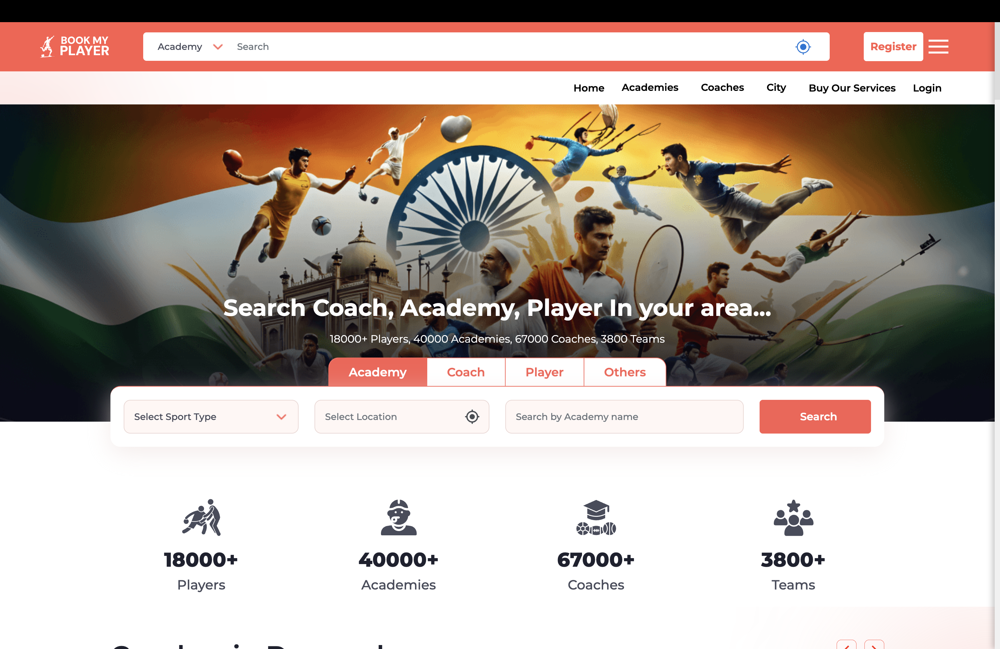

For each feature: a one-line pitch, the change in the UI shown as a numbered mockup, a bullet legend explaining each callout, and the business impact. Built from the current BookMyPlayer homepage as the baseline.
Live screenshot of BookMyPlayer.com — strong reach and credibility (18k+ players, 40k+ academies), but the homepage works as a pure search directory. No personalization, no AI surface, no academy-side intelligence.

A player uploads a 30-second clip. The system returns a frame-by-frame breakdown — posture, balance, timing, technique — in under 60 seconds, mapped to drills and academies.
Indian parents live on WhatsApp. The bot continues the conversation after the user leaves the website — qualifies intent, books trials, sends reminders. Hands off to a human only when confidence drops.
Every inquiry looks the same in a form. Behaviorally, a parent who watched 4 videos and compared 3 academies is nothing like one who bounced after 8 seconds. This view ranks every lead — with reasons academies can trust.
Today every user sees the same homepage. The cricket batter and the football goalkeeper should land on what feels like two different apps — even though the template is the same. Powered by behavior embeddings.
Most AI is built for players. This one is the reason academies stay on the platform: a weekly AI briefing, ready-to-send replies, and profile improvements — all grounded in their own data.
Estimated revenue impact: ₹36,000/month. Academies that reply within 1 hour convert 22% better.
This is the order I'd suggest building in and the kind of outcomes I'd hold these features to.